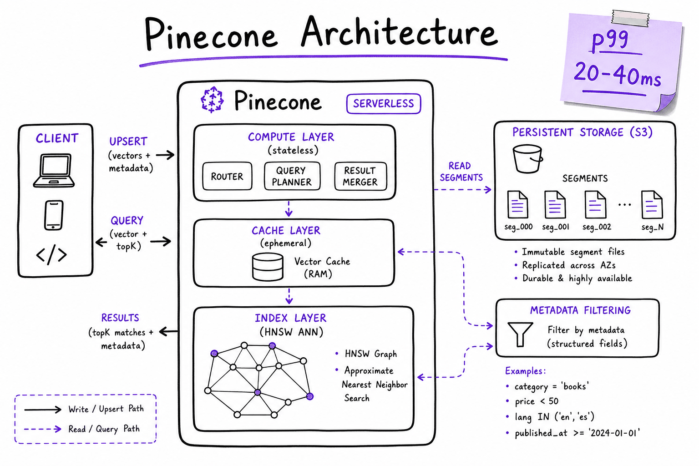
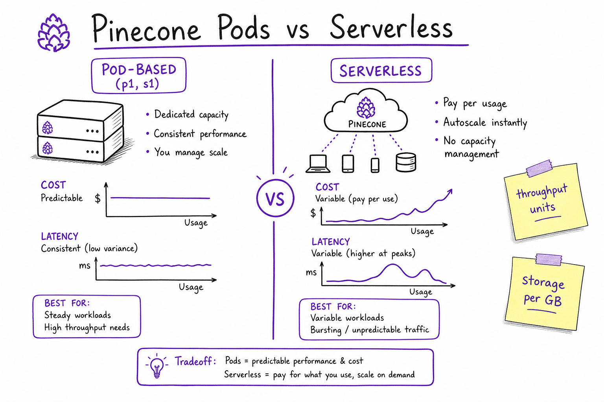
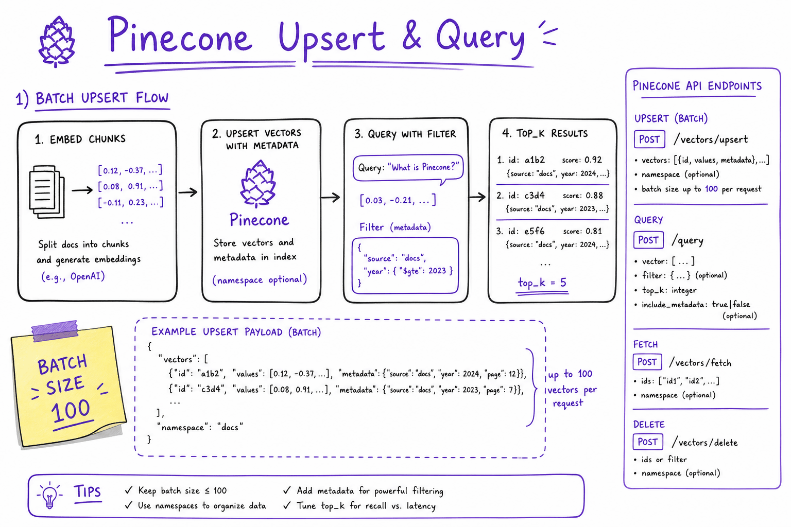
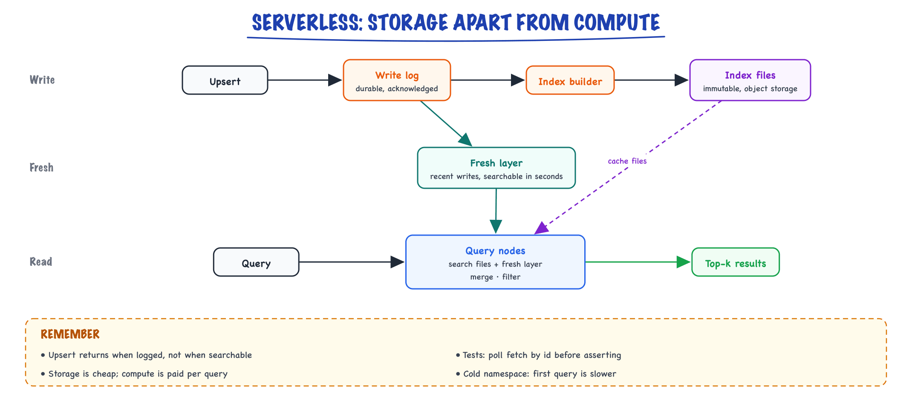
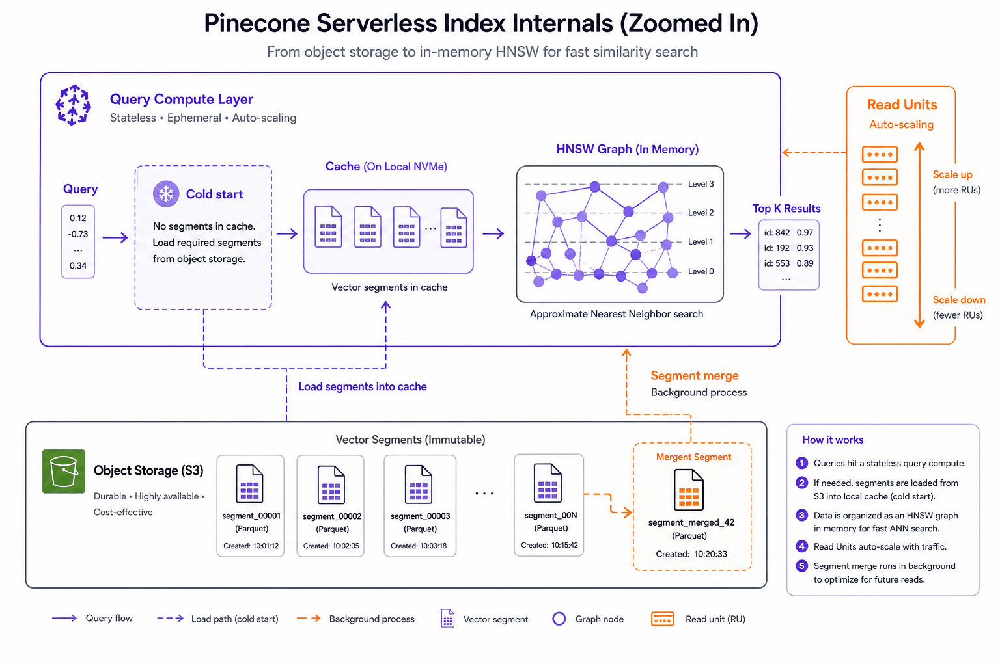
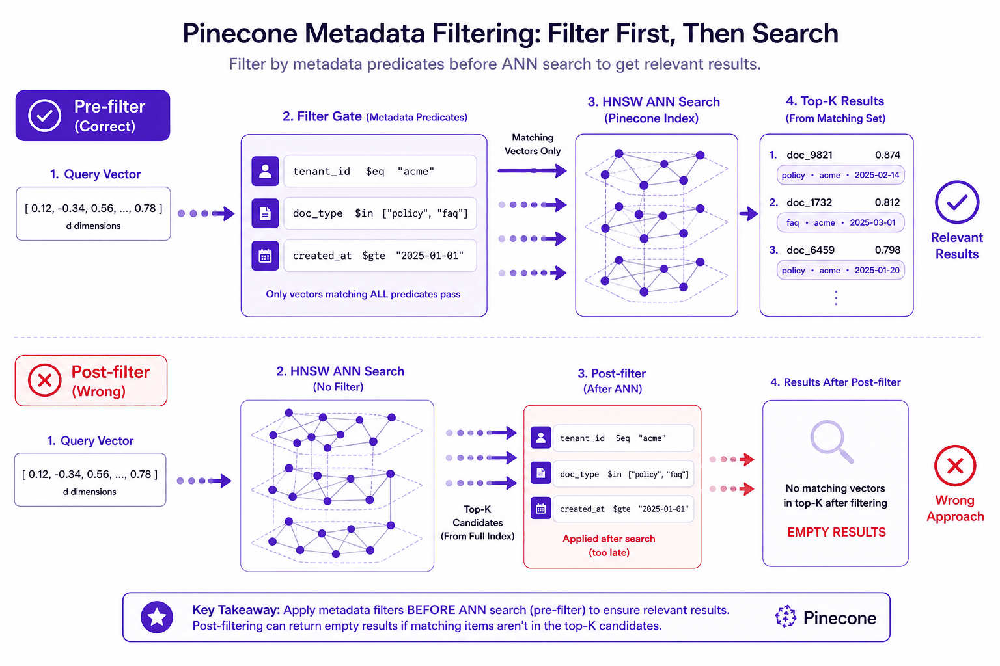

Pinecone // Tech & tools
Managed serverless vector database: namespaces, metadata filters, hybrid.
01 — At a glance
Fully managed vector database: serverless indexes, namespaces, metadata pre-filtering, sparse-dense hybrid, and upsert/query at scale without operating HNSW yourself. Part of the vector DB family covered in Vector search & databases — compare with pgvector, Weaviate, and Chroma.

Pinecone architecture: client upsert/query → serverless index (S3-backed segments + compute cache) → HNSW ANN → metadata pre-filter → filtered top-k. Typical p99 query ~20–40 ms at millions of vectors.

Pod-based vs serverless Pinecone: dedicated capacity with predictable cost and latency, or pay-per-use autoscaling.

Batch-upsert vectors with metadata, then query with a metadata filter for the top-k matches.
02 — New words
| Word | Meaning |
|---|---|
| Managed vector database | A service that stores and indexes your vectors and answers similarity queries over an API. You never run servers or tune index files. |
| Index | Pinecone's top-level container. Has a fixed dimension and a fixed similarity metric chosen at creation. |
| Namespace | A partition inside an index. Every write and query names one namespace, and a query only ever sees that namespace's records. |
| Record | One stored item: an id, a dense vector, an optional sparse vector, and optional metadata. |
| Serverless | The deployment model where you pay for storage and for the reads and writes you make, and capacity scales automatically. |
| Pod-based | The older model where you rent fixed-size capacity units (pods), with replicas for throughput and a fixed bill. |
| Read units / write units | The usage measures serverless billing counts. A query's read cost grows with how much data it has to consider and return. |
| Metadata filter | A condition on record metadata (equals, in, range, and/or) applied inside the search, so top-k is computed among matching records only. |
| Sparse vector | A vector with a weight for only a few vocabulary terms, used for keyword-style matching alongside the dense vector. |
| Eventual consistency | A write is acknowledged before it is searchable; it becomes visible to queries a short time later. |
| Blue/green index | Building a new index or namespace next to the live one (for a new embedding model), testing it, then switching traffic. |
The lesson
03 — The question
A vector database in production has to do several hard things at once: keep an approximate nearest-neighbour index fast as data grows, stay available when machines fail, apply filters without wrecking recall, and keep one customer's data away from another's. You can run software that does this yourself, or you can pay someone to. Pinecone is the best-known "pay someone" option: a fully managed vector database you reach over an API, with no servers, index files or capacity planning on your side.
The interview questions:
- What is Pinecone's data model, and what happens on a write and a query?
- How do you design multi-tenancy: a namespace per tenant, or one namespace with a tenant filter?
- What drives the bill and the latency, and what are the failure modes?
- When would you pick it over pgvector, Weaviate or something self-hosted?
The running example: a B2B contract-review product. Each customer company (tenant) uploads its contracts; the assistant answers questions like "what is our indemnification cap with Acme?" using only that tenant's documents. There are 2,000 tenants and 30 million chunks in total, embedded with a 1,024-dimension model. Tenant sizes are very uneven, as they always are: the median tenant has about 5,000 chunks, the largest about 2 million.
04 — Step 1: the mental model, an API in front of someone else's index
With Pinecone you own three things: the vectors (you compute them, or ask its hosted embedding models to), the metadata, and the ids. Pinecone owns everything else: index structure, sharding, replication, scaling and upgrades. The hierarchy is short:
project
index "contracts-v1" dimension = 1024, metric = cosine | dotproduct | euclidean
namespace "tenant-acme" records: id, values[1024], sparse_values?, metadata{}
namespace "tenant-globex"
...
The dimension and metric are fixed when the index is created. That has a direct consequence: changing embedding model means a new index (or at least new namespaces), filled in parallel and switched to when it tests better. Plan for that from day one; it is the most common "migration" a RAG team does.
The metric must match how the embedding model was trained, usually cosine. Choose dot product if you need hybrid sparse-dense search in one index (Step 6) and your dense vectors are normalised, in which case dot product and cosine rank identically.
05 — Step 2: inside serverless, storage separated from compute
The serverless architecture explains most of Pinecone's behaviour, so it is worth holding a simplified picture (the internals are the vendor's and evolve; this is the shape that matters):

Writes land in a durable log, show up in a fresh layer within seconds, and are built into immutable index files in object storage; query nodes cache those files and search them with the fresh layer.
Three behaviours follow from it.
Writes are eventually consistent. An upsert returns once it is durably logged, not once it is searchable. There is a short window, typically seconds, when a query will not see it. Your product rarely notices (a contract uploaded now and queried a minute later is fine), but your tests will: "upsert then immediately query" is flaky. Tests should poll with fetch by id, or wait until the namespace's record count reflects the write, before asserting.
Storage is cheap, compute is paid per use. Vectors sit in object storage, which costs little per gigabyte; compute is spent when you query. That is why serverless suits workloads where most data is rarely queried, such as 2,000 tenants of whom a few hundred are active at any moment.
Cold data is slower. A namespace nobody has queried recently may need its files fetched into a query node's cache, so its first query is slower than the hundredth. For a demo or a latency-sensitive tenant, a warm-up query after deploy hides it.
The older pod-based model is the opposite trade: you rent fixed capacity, the index lives on that capacity, and you add replicas for throughput. It gives predictable latency and a fixed bill for steady, high query volumes, and you pay for it whether or not it is used.
06 — Step 3: namespaces are the unit of isolation and of work
The most important design decision for our contract product is how to separate tenants. There are two options.
Option A: one namespace, tenant as metadata. Every record carries tenant_id, and every query adds the filter tenant_id = acme. Simple to set up. But the filter is now the only thing between one customer and another's contracts: one code path that forgets it is a data leak, and nothing in the database will notice. And each query runs against an index built over all 30 million records.
Option B: one namespace per tenant. Acme's records go into tenant-acme, and the query names that namespace. A query cannot see another namespace at all, so a forgotten filter cannot leak. And the work a query does is proportional to its own namespace, not to the whole index.
Put numbers on the second point. Raw vectors are 1,024 dimensions × 4 bytes = 4 KB each.
- The whole index: \(30{,}000{,}000 \times 4\text{ KB} \approx 122.9\) GB of vectors.
- The median tenant's namespace: \(5{,}000 \times 4\text{ KB} \approx 20.5\) MB.
- The largest tenant's namespace: \(2{,}000{,}000 \times 4\text{ KB} \approx 8.2\) GB.
In serverless pricing, read cost grows with the size of the namespace a query searches (with a minimum per query). A median tenant's query in Option B considers about 6,000 times less data than a query over the shared index, so it is both cheaper and faster, and small tenants do not pay for large ones.
Namespaces suit the case where a query belongs to exactly one partition (one tenant, one embedding-model version). They do not suit cases where queries must span partitions: a query runs against one namespace, so cross-tenant search (an internal admin view) means fanning out one query per namespace and merging the results (recent clients include a helper that does exactly this), or keeping a separate index for it. Use namespaces for hard partitions, metadata filters for everything a query might combine.
07 — Step 4: metadata and filtering
Within a namespace, metadata filters narrow results by fields such as doc_type, counterparty, effective_date or access_groups. The filter language is a small set of operators (equals, not equals, in, not in, greater or less than, exists, and/or), written as JSON with operator names prefixed by a dollar sign, in the style of MongoDB.
Pinecone applies the filter during the vector search, not after it, so top_k=10 with a filter returns the ten best matching records rather than the best ten overall minus the ones that fail. The reason this matters for permissions is in making RAG good: searching first and filtering after can leave a user with an empty context.
Design metadata deliberately:
- Keep it small. There is a per-record metadata size limit (tens of kilobytes at the time of writing), and metadata is stored and returned with every match. Store the chunk text if you want it back with results, but not entire documents; keep large payloads in your own database or object store keyed by the record id.
- Filter on low-cardinality, structured fields. Document type, dates as numbers (epoch seconds, so range filters work), group ids as a list. Do not invent a filter on a free-text field.
- Treat it as a copy, not the source of truth. Permissions and document status live in your application database; metadata is a synchronised copy for filtering, and needs a re-sync when the source changes.
08 — Step 5: the write path, ids and deletes
Ingestion for a new contract: parse, chunk, embed, then upsert records in batches into the tenant's namespace. Four practices make it reliable.
Deterministic ids. Use tenant#document#chunk, for example acme#msa-2024#0007. An upsert with an existing id replaces the record, so a crashed ingestion can simply be rerun. And because serverless indexes can list ids by prefix, all chunks of one document can be found later without a separate lookup table.
Batch by size. Requests have a size limit (a few megabytes at the time of writing). A 1,024-dimension vector is 4 KB in binary but about 10 KB as JSON text, plus metadata, so batches of one or two hundred records per request are typical over the REST client; the gRPC client is more compact. Send batches in parallel, and back off and retry on rate-limit responses (HTTP 429).
Replacing a document. When Acme uploads a revised MSA, list the ids with prefix acme#msa-2024#, delete them, and upsert the new chunks. If the new version has fewer chunks than the old, an upsert alone would leave stale chunks 0031 to 0040 behind, still retrievable.
Deleting a tenant. With a namespace per tenant, offboarding is "delete the namespace", one call, and nothing is left behind. With a shared namespace, it is a search for every record of that tenant, which is slower and easier to get wrong. For data-protection requests, the namespace design is much easier to prove correct.
09 — Step 6: the query path and hybrid search
A query names the namespace, supplies the query vector, top_k, an optional filter, and whether to include metadata and values. It returns matches with ids, scores and (optionally) metadata. Scores are similarities for cosine and dot product, so higher is better, the opposite convention from databases that return distances.
Contracts are full of exact strings: clause numbers, defined terms, party names. Dense embeddings blur them; a user asking about "clause 14.2" wants the chunk that says "14.2". Pinecone supports this with sparse-dense records: each record has a dense vector and a sparse vector of term weights (from BM25-style weighting or a learned sparse model), in an index using the dot-product metric. A query also carries both. The score is one dot product over both parts, so weighting dense against sparse is done by scaling the query:
\[ \text{score} = \alpha \,(q_d \cdot d_d) + (1 - \alpha)\,(q_s \cdot d_s) \]where \(q_d, d_d\) are the dense query and document vectors, \(q_s, d_s\) the sparse ones, and \(\alpha\) between 0 and 1 is the weight on meaning versus exact terms. Multiply the dense query by \(\alpha\) and every sparse query weight by \(1 - \alpha\), send that, and the database's dot product computes exactly this sum.
Worked, for the query "indemnification cap clause 14.2". Chunk A paraphrases the indemnity terms without the exact words: dense similarity 0.96, sparse score 0. Chunk B quotes clause 14.2 verbatim: dense 0.80, sparse 1.40. At \(\alpha = 1\) (dense only), A wins 0.96 to 0.80. At \(\alpha = 0.75\): A scores \(0.75 \times 0.96 = 0.72\); B scores \(0.75 \times 0.80 + 0.25 \times 1.40 = 0.95\), so B wins. Note that sparse scores are not on the same scale as cosine similarities (1.40 is above 1), so \(\alpha\) is not a pure "percent keyword"; tune it on a golden set with identifier-heavy questions.
The alternative is a separate keyword index (another sparse-only index, or a search engine), two queries, and fusion in your code with reciprocal rank fusion, which ignores score scales altogether. Both approaches, and when each wins, are covered in hybrid search. After retrieval, a reranker over the top 20 to 50 usually adds more than tuning \(\alpha\) does (see reranking); Pinecone can host one, or you call your own.
10 — Step 7: what drives cost and latency
Serverless bills three things, and each maps to a design choice:
| Cost driver | Grows with | Lever |
|---|---|---|
| Storage | Records × (dimension × 4 bytes + metadata) | Smaller dimension models; lean metadata; delete stale versions |
| Writes | Records written and their size | Skip re-embedding unchanged chunks (hash the text); avoid full nightly rewrites |
| Reads | Size of the namespace searched, results returned, metadata included | Namespace per tenant; modest top_k; include metadata only when needed |
For our product, storage is about 123 GB of vectors plus metadata: at an illustrative object-storage-like price, a modest monthly line. Reads are the line that can surprise you, and only if you search large namespaces at high volume. A rule worth remembering: the same query load costs very different amounts depending on namespace design, because reads scale with what each query must consider.
Latency has three parts: the network round trip to the region (choose the region where your application runs; a cross-continent hop adds tens of milliseconds), the search itself (typically tens of milliseconds for warm namespaces), and cold-cache effects for rarely used namespaces. For p99 targets, measure with your real namespace size distribution, including the largest tenant, because that is where the slowest queries are.
When does provisioned capacity (pod-based indexes, or dedicated read capacity where the vendor offers it) win? When query volume is high and steady around the clock, so paying per read exceeds the cost of reserved capacity, or when you need tightly bounded latency for one very large, very hot namespace. The serverless default suits spiky and long-tailed workloads, which multi-tenant SaaS usually is.
11 — Step 8: failure modes and operations
- Wrong namespace, empty answer. Querying a namespace that does not exist is not an error; it returns no matches. A typo in the namespace name looks like "the bot knows nothing". Validate tenant-to-namespace mapping in one place and alert on zero-match rates.
- Dimension mismatch. Upserting 1,536-dimension vectors into a 1,024-dimension index fails loudly, which is good. Querying with vectors from a different model of the same dimension fails silently, which is bad: pin the model name in your configuration next to the index name.
- Eventual consistency. Read-your-writes is not guaranteed. Design the UI ("processing your document") and tests around it.
- Rate limits. Bulk ingestion can hit per-index request limits. Use bounded parallelism and exponential backoff with jitter (see reliability).
- Outage dependency. Retrieval now depends on a third-party service and a network path. Decide what the product does when it is unavailable: degrade to "search is temporarily unavailable", not to an ungrounded answer.
- Data residency and lock-in. Pick the cloud and region to match customers' residency needs. Keep the source documents and the embedding pipeline yours, so a move to another store is a re-upload, not a rescue.
12 — Choosing Pinecone
| Situation | Pinecone? | Alternative and why |
|---|---|---|
| Multi-tenant SaaS, many tenants, no team to run a database | Strong fit | Namespaces give isolation and per-tenant cost |
| Tens of millions of vectors, spiky load | Strong fit | Serverless absorbs spikes without capacity planning |
| Already on Postgres, a few million vectors, need joins and transactions with app data | Usually not | pgvector: one database, one transaction, no new vendor |
| Need open source, self-hosting or on-premises | No | Weaviate or another self-hostable engine |
| Prototype or CI tests | Overkill | Chroma, in-process and offline |
| Strict read-after-write consistency for every query | Design around it | A transactional store such as pgvector gives it natively |
The one-sentence answer for an interview: Pinecone trades control and some cost at very high steady load for zero operations, elastic scaling and clean tenant isolation; choose it when operating a vector database is not a competence you want to build. The broader comparison is in vector search and databases.
13 — In code: the client, and the hybrid arithmetic
# Not run here: needs `pip install pinecone` and an API key. Written against the Pinecone Python client's documented API (2025). import os from pinecone import Pinecone, ServerlessSpec OP = "$" # filter operators are a dollar sign plus a name: eq, in, gte, and, or ... pc = Pinecone(api_key=os.environ["PINECONE_API_KEY"]) pc.create_index(name="contracts-v1", dimension=1024, metric="dotproduct", # dotproduct for sparse-dense spec=ServerlessSpec(cloud="aws", region="us-east-1")) index = pc.Index("contracts-v1") index.upsert(namespace="tenant-acme", vectors=[{ "id": "acme#msa-2024#0007", "values": dense_vec, # 1,024 floats, normalised "sparse_values": {"indices": [101, 202], "values": [0.4, 1.2]}, "metadata": {"doc_id": "msa-2024", "doc_type": "msa", "effective": 1704067200, "text": "14.2 Indemnification cap ..."}, }]) res = index.query(namespace="tenant-acme", vector=q_dense, sparse_vector=q_sparse, top_k=20, filter={"doc_type": {OP + "in": ["msa", "sow"]}}, include_metadata=True) # scores: higher is better for ids in index.list(prefix="acme#msa-2024#", namespace="tenant-acme"): # replace a document index.delete(ids=ids, namespace="tenant-acme")
The hybrid weighting from Step 6, runnable with numpy: scaling the query makes one dot product equal \(\alpha \cdot \text{dense} + (1 - \alpha) \cdot \text{sparse}\).
import numpy as np def hybrid_query(dense, sparse, alpha): """Scale the query so that one dot product = alpha*dense + (1-alpha)*sparse.""" return [alpha * x for x in dense], {i: (1 - alpha) * w for i, w in sparse.items()} def score(q_dense, q_sparse, d_dense, d_sparse): dense = float(np.dot(q_dense, d_dense)) sparse = sum(w * d_sparse.get(i, 0.0) for i, w in q_sparse.items()) return dense + sparse # query "indemnification cap clause 14.2": unit dense vector + sparse term weights q_dense = np.array([0.6, 0.8]) q_sparse = {101: 0.5, 202: 1.0} # token ids for "indemnification", "14.2" docs = { "A (paraphrase, no exact terms)": (np.array([0.8, 0.6]), {}), "B (cites clause 14.2 verbatim)": (np.array([0.0, 1.0]), {101: 0.4, 202: 1.2}), } for alpha in (1.0, 0.75, 0.5): qd, qs = hybrid_query(q_dense, q_sparse, alpha) print(f"alpha={alpha}:", {name: round(score(qd, qs, d, s), 3) for name, (d, s) in docs.items()}) # namespaces vs one shared index: how much data a single query must consider dim, bytes_per = 1024, 4 total, median_tenant = 30_000_000, 5_000 print("shared index GB:", round(total * dim * bytes_per / 1e9, 1), "| median tenant namespace MB:", round(median_tenant * dim * bytes_per / 1e6, 1))
It prints A ahead at \(\alpha = 1\) (0.96 against 0.80), B ahead at 0.75 (0.95 against 0.72) and further ahead at 0.5, then 122.9 GB against 20.5 MB: the numbers from Steps 3 and 6.
Quick reference
14 — What & Why
Pinecone is a fully managed vector database SaaS. You send embeddings + metadata; Pinecone runs HNSW indexing, sharding, replication, and scaling. It is the “no platform team” choice for multi-tenant SaaS RAG at 10M+ vectors when you do not want to operate Vector search & databases graphs yourself.
Functional requirements
- Upsert vectors with stable IDs, metadata JSON, and namespace isolation
- Query by dense vector with top-k, metadata filters, and optional sparse values
- Delete / fetch by ID or metadata filter for GDPR and doc lifecycle
- Namespaces for tenant isolation or embedding model version blue/green
- Hybrid sparse-dense vectors when keyword + semantic matter in one index
Non-functional requirements
- Latency: p99 query < 50 ms at millions of vectors (region co-location matters)
- Availability: managed SLA; no self-hosted failover planning
- Scale: serverless auto-scales read/write units; pod tier for extreme QPS
- Cost: storage + read units + write units; monitor namespace sprawl
- Security: API key auth; metadata ACL pre-filter; never expose keys client-side
Prerequisite: understand Vector search & databases and Choosing an embedding model — dimension is fixed at index creation; model change = new namespace.
15 — Core Concepts
| Term | Definition | Gotcha |
|---|---|---|
| Index | Top-level container for vectors of fixed dimension. | Dimension immutable after create; wrong dim = upsert failure. |
| Namespace | Logical partition within an index (tenant, embed version). | Query must target correct namespace; empty namespace = no results. |
| Serverless | Usage-based tier; segments on object storage, compute on demand. | Cold start on brand-new indexes; warm with probe queries after deploy. |
| Pod | Dedicated hardware tier (legacy / extreme QPS). | Higher baseline cost; serverless preferred for new projects. |
| Metadata | JSON key-value attached to each vector for filtering. | Only indexed fields filter efficiently; keep payloads small. |
| Read / Write units | Billing dimensions for queries and upserts. | Batch upserts; avoid tiny per-chunk API calls. |
| Sparse values | Token-weight map for hybrid keyword leg. | Requires compatible index type; else dual-query + RRF in app. |
| Score | Similarity returned with each match (cosine / dot). | Log for reranker input and eval harness. |
16 — API / Interface Surface
Create index (serverless)
from pinecone import Pinecone, ServerlessSpec
pc = Pinecone(api_key=os.environ["PINECONE_API_KEY"])
pc.create_index(
name="rag-prod",
dimension=1536, # text-embedding-3-small
metric="cosine",
spec=ServerlessSpec(cloud="aws", region="us-east-1"),
)
index = pc.Index("rag-prod")
Upsert (batch ingest)
index.upsert(
vectors=[
{
"id": "handbook:chunk-42",
"values": embedding, # list[float], len=1536
"metadata": {
"tenant_id": "acme",
"source": "handbook.pdf",
"page": 12,
"doc_type": "policy",
"embed_model": "text-embedding-3-small_v1",
},
}
],
namespace="acme_v1",
)
# Batch 100–500 vectors; exponential backoff on 429
Query (retrieve)
results = index.query(
vector=query_embedding,
top_k=20,
namespace="acme_v1",
filter={
"tenant_id": {"$eq": "acme"},
"doc_type": {"$in": ["policy", "faq"]},
},
include_metadata=True,
)
for match in results["matches"]:
print(match["id"], match["score"], match["metadata"])
Delete by filter (GDPR)
index.delete(filter={"user_id": {"$eq": "user-9912"}}, namespace="acme_v1")
Contract to nail in interviews: idempotent upsert by chunk ID, namespace per embed model version, metadata pre-filter before top-k reaches the LLM, scores logged for reranker.
17 — When to Use / When NOT
| Scenario | Use Pinecone | Alternative |
|---|---|---|
| Multi-tenant SaaS RAG, 10M+ vectors | Yes — managed scale | Self-host Milvus/Qdrant if platform team exists |
| No vector ops expertise | Yes — zero HNSW tuning | pgvector if team knows Postgres |
| Already on Postgres, <5M vectors | Maybe not — added cost | pgvector + HNSW |
| Native BM25+vector in one query | Hybrid vectors or app fusion | Weaviate native hybrid GraphQL |
| SQL JOINs with orders/users | No — separate store | pgvector in Postgres |
| Local notebook / CI | No — overkill | Chroma embedded |
| Strong ACID + vector in one TX | No | pgvector |
18 — Architecture
App ──upsert/query──► Pinecone Index
├── namespace: tenant_a_v1
├── namespace: tenant_b_v1
└── namespace: acme_embed_v2 (blue/green)
Postgres/S3 ◄── chunk text + ACL (not in Pinecone alone)
Pinecone is the retrieval index, not the document store. Keep full chunk text elsewhere for citations and debugging.
19 — Deep Dive: Serverless
Serverless indexes decouple storage from compute: vector data persists on object storage as segments; query nodes load segments into cache and run HNSW. Read/write units scale with traffic — you do not provision pod sizes manually.
| Aspect | Serverless behavior | Ops implication |
|---|---|---|
| Storage | Segments on S3/GCS; durable across restarts | Storage billed per GB-month |
| Compute | Query nodes spin up / cache segments | First queries after idle may be slower (cold start) |
| Scaling | Auto read units under load | Monitor p99 after traffic spikes |
| Region | Pick same region as app + embed service | Cross-region adds 50–150 ms RTT |
Warm-up checklist after deploy
- Run 10–20 representative queries against each active namespace
- Verify p99 latency before shifting production traffic
- Co-locate Pinecone region with embedding API and app servers

Serverless internals: object-storage segments, query compute cache, HNSW in memory, auto-scaling read units. Pod tier remains for predictable extreme QPS if serverless limits bite.
20 — Deep Dive: Metadata Filters
Production RAG filters by tenant, ACL, doc type, and date before returning chunks. Pinecone applies metadata predicates during ANN search (pre-filter) — not after — when fields are indexed.
Filter DSL (Mongo-style)
filter = {
"tenant_id": {"$eq": "acme"},
"doc_type": {"$in": ["policy", "faq"]},
"page": {"$gte": 1, "$lte": 100},
"allowed_roles": {"$in": ["employee", "manager"]},
"created_at": {"$gte": "2025-01-01"},
}
| Operator | Example | Use case |
|---|---|---|
$eq | {"tenant_id": {"$eq": "acme"}} | Single tenant |
$in | {"doc_type": {"$in": ["faq"]}} | Multiple doc types |
$gte / $lte | date / numeric ranges | Time-bounded search |
$and / $or | compound predicates | Complex ACL rules |
Post-filter trap: retrieving top-k globally then filtering in app code yields 0–2 results when filters are selective. Use metadata pre-filter or namespace-per-tenant. See Vector search & databases.

Pre-filter: metadata gate before HNSW. Post-filter after ANN: common bug — global top-20 may all fail tenant filter, starving the LLM of context.
21 — Hybrid Vectors
When queries mix exact tokens (SKUs, error codes) with semantic intent, combine sparse (keyword) and dense (embedding) signals. Pinecone supports sparse-dense vectors in compatible index configurations; otherwise run dual retrieval + RRF in the application layer.
| Approach | How | When |
|---|---|---|
| Sparse-dense in Pinecone | Upsert values + sparse_values; query both | Single-index hybrid; simpler ops |
| Dual index + RRF | BM25 in Elasticsearch + vector in Pinecone; fuse ranks | Existing ES investment |
| Rerank only | Vector top-50 → cross-encoder top-5 | Semantic-primary with keyword boost in reranker |
- Weaviate ships native BM25+vector hybrid in one GraphQL call — compare DX if hybrid is core.
- See Hybrid search & query understanding for RRF fusion math and alpha tuning.
- Always add Reranking stage after hybrid top-20 (+30–80 ms).
22 — Index Lifecycle
Blue/green embedding model upgrade
- Create new namespace
tenant_v2(or new index) for new embed model - Re-embed full corpus async; upsert into v2 namespace
- Run golden-set recall eval: v2 must beat or match v1
- Flip query traffic to v2; deprecate v1 after soak period
- Delete v1 namespace to save storage costs
Day-2 operations
| Operation | Pattern |
|---|---|
| Upsert | Idempotent by chunk ID; batch 100–500; retry 429 with jitter |
| Delete doc | Delete by metadata doc_id filter or list IDs |
| GDPR | Delete vectors + purge source in docstore |
| Staging isolation | Separate namespace — never share with prod |
23 — Pinecone vs pgvector vs Weaviate vs Chroma
| Pinecone | pgvector | Weaviate | Chroma | |
|---|---|---|---|---|
| Deployment | Fully managed SaaS | Postgres extension | Self-host or cloud | Embedded / local |
| Ops burden | Lowest | Low if on Postgres | Medium–high self-host | Lowest (dev) |
| Hybrid | Sparse-dense / app fusion | SQL FTS + manual fusion | Native GraphQL hybrid | Limited |
| Multi-tenant | Namespaces + metadata | SQL WHERE + partitions | Tenant shards per class | Collections (weak isolation) |
| Best scale | 10M–billions | <1–10M per instance | 1M–100M+ | <500K dev |
Full comparison matrix: Vector search & databases.
In production
24 — Production & Ops
| Concern | Practice |
|---|---|
| API keys | Server-side only; rotate; separate keys per env |
| Latency | Track p50/p99; co-locate region; warm after deploy |
| Cost | Prune stale namespaces; batch upserts; right-size top_k before rerank |
| Recall | Weekly golden-set eval; log scores; alert on drop >5% |
| Rate limits | Client-side token bucket; queue ingest workers |
| Observability | Log query_id, namespace, top_k, filter, latency, match IDs |
# Ingest worker pattern
def upsert_batch(index, namespace, rows, batch_size=200):
for i in range(0, len(rows), batch_size):
batch = rows[i:i+batch_size]
retry_with_backoff(lambda: index.upsert(vectors=batch, namespace=namespace))
26 — Where people get lost
- Wrong dimension at index create: 1536 vs 3072 mismatch — full re-index required.
- One namespace for staging + prod: test upserts pollute production retrieval.
- Post-filter in app code: selective tenant filter after global top-k → empty context.
- No embed version in namespace: silent mix of v1/v2 vectors after partial re-embed.
- API key in browser: exposed credentials; always proxy through backend.
- Tiny upsert batches: write-unit cost explosion; batch 100–500.
- Vectors without source pointer: metadata missing
source_uri— citations break. - Ignoring hybrid: pure vector misses exact SKUs users paste verbatim.
- "A tenant filter is enough isolation." One forgotten filter leaks data, and every query does work over the whole index. Use a namespace per tenant when queries never span tenants.
- "Upsert then query" in tests. Writes are eventually consistent; poll by id before asserting.
- Replacing a document with upserts only. If the new version has fewer chunks, old chunks remain retrievable. Delete by id prefix, then upsert.
- Putting whole documents in metadata. It hits size limits and inflates storage and read costs. Store text elsewhere or only the chunk.
- Reading \(\alpha\) as "percent keyword". Sparse and dense scores are on different scales. Tune \(\alpha\) on a labelled set, or fuse ranks instead.
- Changing embedding model in place. Dimension and metric are fixed, and mixing models corrupts similarity. Build a new index or namespaces, test, switch.
- Treating zero matches as "no relevant content". It is often a wrong namespace name. Alert on it.
27 — How this connects
Builds on
- Choosing an embedding model — Model families, dimensions, benchmarks, cost, and when to fine-tune or switch.
- Vector search & databases — Exact and approximate nearest neighbours, HNSW and IVF, and choosing a vector database.
- The RAG pipeline — Retrieve, augment, generate: every stage from a question to a grounded, cited answer.
- Chunking — Fixed, recursive, semantic, document-aware and parent-child chunking, and how to tune it.
- Hybrid search & query understanding — BM25 plus vectors fused with RRF, query rewriting, decomposition and HyDE.
- Reranking — Cross-encoder rerankers: retrieve wide, rescore, keep the best few.
Where this shows up later
28 — Check yourself
A tenant has 400,000 chunks at 1,536 dimensions. How large is its namespace's raw vector data?
With \(\alpha = 0.6\), chunk X has dense 0.90 and sparse 0.2; chunk Y has dense 0.75 and sparse 1.1. Which ranks first?
Your integration test upserts five chunks and immediately queries; it fails one run in ten. Why, and what is the fix?
fetch by id (or the namespace record count) until they appear, with a timeout, before querying.An internal analytics team wants to search across all 2,000 tenants' contracts. You use a namespace per tenant. What do you do?
A customer cancels and asks for deletion of all their data. Compare the work under the two tenancy designs.
Your team already runs a highly available Postgres with the customer and document tables, and expects 3 million chunks. Pinecone or pgvector?
Queries for the largest tenant (2M chunks) have a p99 three times the median tenant's. Name two causes and two fixes.
top_k and avoid including metadata in the first pass; consider provisioned capacity for that tenant if its load is steady.Why Pinecone over self-hosted Milvus or Qdrant?
Serverless vs pod tier — when does each win?
How do you implement multi-tenancy in Pinecone?
tenant_id — fewer namespaces to manage. Never rely on the LLM to ignore wrong-tenant chunks — enforce at retrieval.Explain metadata filter syntax and pre-filter vs post-filter.
$eq, $in, $gte, $and. Pinecone pre-filters during ANN when fields are indexed. Post-filter in app after top-k is a common bug when filters are selective — use pre-filter or over-fetch 5×k (wasteful). Prefer namespace or pre-filter.Upsert best practices for production ingest?
doc_id:chunk_idx); batch 100–500 vectors; include embed_model in metadata; retry 429 with exponential backoff; async queue for large corpora; never block user requests on full re-embed.How do you tune query latency?
What happens when you change the embedding model?
embed_model=text-embedding-3-small_v1.Hybrid search in Pinecone — how?
What drives Pinecone cost?
GDPR delete for a user — walk through it.
user_id filter across namespaces; verify docstore/object storage also purged; audit log deletion job; confirm query no longer returns deleted IDs on golden tests.